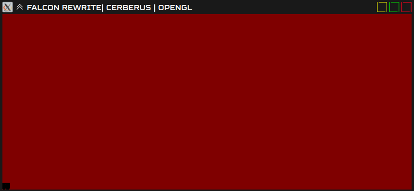
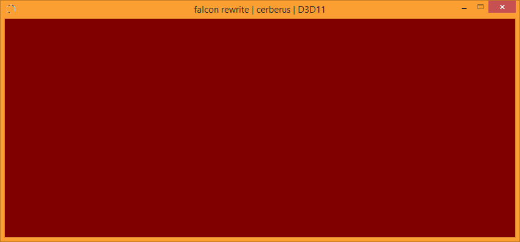

Main Idea
A total rewrite of Feztris' engine, focus on multi-platform and less tech debt.
Currently in the process of getting the renderer up and running
Currently in the process of getting the renderer up and running
Structure
WAY less object-oriented than something like Unity or Unreal.
I intend, if I possibly can, to never have a GameObject-esque class.
I intend, if I possibly can, to never have a GameObject-esque class.
Platform support
The primary platform is PC, specifically linux but enough attention will be given to the Windows build.
If i can get the homebrew toolkits working, I plan to support the Nintendo Switch, and maybe Xbox One; 3DS as well if I feel like it.
APIS:
If i can get the homebrew toolkits working, I plan to support the Nintendo Switch, and maybe Xbox One; 3DS as well if I feel like it.
APIS:
- OpenGL
- D3D11 / DXVK-Native
- Vulkan (eventually)
Main barriers
Time.
But aside from that, finding ways to abstract things across both OpenGL and D3D11 is difficult, because they do things differently. D3D11 is of course lower-level, but it's also fundamentally different in how it works. Specifically, the way it handles vertex buffers/arrays is a pain in my ass and I wish it worked like how it does in OpenGL.
I'm not even sure why I'm supporting D3D11, other than a gateway to lower-level APIs, since I'm most familiar with OpenGL.
But aside from that, finding ways to abstract things across both OpenGL and D3D11 is difficult, because they do things differently. D3D11 is of course lower-level, but it's also fundamentally different in how it works. Specifically, the way it handles vertex buffers/arrays is a pain in my ass and I wish it worked like how it does in OpenGL.
I'm not even sure why I'm supporting D3D11, other than a gateway to lower-level APIs, since I'm most familiar with OpenGL.
In-dev Images
Linux - OpenGL (Currently refactoring)
KILL ME

Linux - OpenGL (Past, working)

Windows - D3D11 (Past, working)
